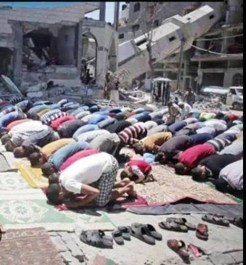

Where Can the Gospel Go Today?
A 0-100 score for every district worldwide, updated monthly.
Heavy persecution, illegal to convert, active killing of religious minorities. Churches operate underground or not at all.
Churches bombed, pastors killed, forced displacement common. Worship possible but dangerous.
Discrimination present, occasional violence, but open churches exist. Legal protections inconsistent.
Minor restrictions, religious practice generally free. Some social discrimination may exist.
Full religious freedom protected by law and practice. All faiths can worship openly without fear.
People living in "Restricted" or "Hostile" zones for religious practice
Countries with significant restrictions
Christians facing persecution globally
Interactive map launch
Our interactive map will allow you to explore the Gospel Access Index for every district worldwide. Filter by country, risk level, and time period. Download reports and access the API for integration into your own systems.
Interactive Global Map
Visualizing the Gospel Access Index across 200+ countries
Zoom into any district worldwide for specific scores and analysis
Download CSV, JSON, or PDF reports for offline analysis
Integrate Gospel Access Index data into your applications
You can't finish the Great Commission if you don't know where the unreached are — or how dangerous it is to reach them.

Be the first to know when the Gospel Access Index launches.